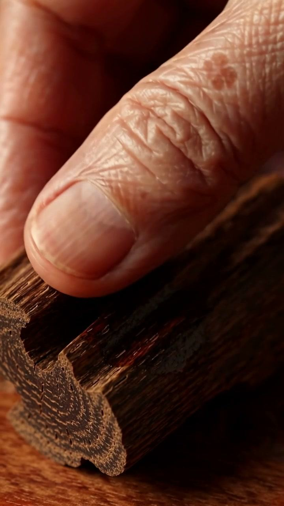

缅甸料的香韵以清甜、药香为主，凉意中等。室温下清雅，上炉后甜味和药香交替出来，层次感不错。喜欢惠安系的清甜、又想要一点厚重感的人，常常会看上缅甸料。
不同地区的缅甸料香韵有差异，北部和南部的料风格不完全一样。买之前亲自闻，别只看产区名。
缅甸料的油脂比较丰富，颜色偏深，棕褐到深褐都有。油线自然，密度中等偏大，好料能沉水浮或沉水。
外观上，缅甸料的木质纹理清楚，油脂和木质交错。太黑发亮、油线像画上去的，要警惕泡油和染色。
缅甸料的价格跨度很大：入门级的碎料不贵，顶级的老料也不便宜。总体上，同规格下缅甸料的价格通常低于芽庄、富森这些名气大的产区，高于一些入门级产区。
价格看的是具体那块料的油脂、香韵和品相，不是产区名。不要拿产区名当价格标签，也不要看到便宜的缅甸料就觉得捡漏。
缅甸料的香韵清甜带药香，做手串、碎料、品香都合适。手串看油脂和品相，碎料看香韵和性价比，品香看上炉后的层次。
预算中等的话，缅甸碎料是很好的入门选择：香韵有特点，价格不离谱，上炉能闻出惠安系和星洲系之间的过渡风格。
第一，产区名不能当真假证明。证书只证明材质，不证明产地。溯源说不清的，先别买。
第二，缅甸料的香韵介于两个体系之间，商家有时会按惠安系卖、有时按星洲系卖。按实际香韵判断，别纠结它属于哪个体系。
第三，亲自闻。清甜带药香是缅甸料的常见风格，闻着发闷、单一甜香、带化学味的，先别买。
喜欢清甜又想要一点厚重感的人，缅甸料是不错的选择。预算中等、想体验惠安系和星洲系之间风格的人，也可以从缅甸料入门。
日常品香、手串、碎料，缅甸料都能用。关键还是看具体那块料的香韵和油脂合不合你的口味。
| 看什么 | 缅甸沉香常见表现 |
|---|---|
| 香韵 | 清甜带药香，凉意中等 |
| 油脂 | 油脂丰富，颜色偏深 |
| 密度 | 中等偏大，好料沉水浮或沉水 |
| 价格 | 跨度大，总体低于芽庄等名产区 |
| 适合 | 喜欢清甜又想要一点厚重感的人 |